User manual
Table of contents
1. Introduction
VOLUMIKA is a realtime, fully dynamic volumetric lighting implementation for Roblox. This user manual will describe how you can configure your copy of VOLUMIKA to get the best results in your game.
For proper functioning, VOLUMIKA should be placed in the workspace. Inside of the main folder, you will find two sets of settings available for configuration.
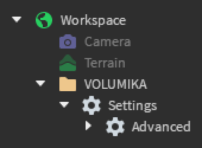2. Basic settings
These are found directly under the VOLUMIKA folder, inside of the 'Settings' instance. 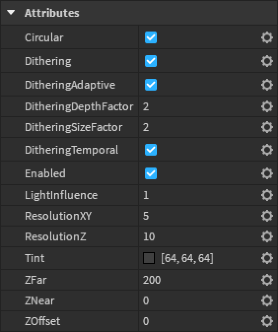2.1. Lighting
These settings control how the fog responds to lighting. They do not generally impact CPU, memory or GPU usage.
2.1.1. Enabled
This is controlled by the Enabled setting. When turned off, all fog is removed from the
scene, and all associated instances are cleaned up.
2.1.2. Tint
This is controlled by the Tint setting. This controls the transparency and colour of
the light added to the scene by the volumetric fog.
Note that the volumetric fog only ever adds light to the scene. It cannot take away light. As such, lower tint values simply fade out to transparent, rather than blocking any light.
2.1.3. Light influence
This is controlled by the LightInfluence setting. This controls how much influence
nearby light sources have on the final tint of the fog, varying between 0 (no influence) and 1 (full
influence).
With full influence, the tint of the fog is multiplied with the lighting colour of the scene. This gives lights a foggy look, and allows for long shadows to be cast through the atmosphere from large objects such as cliffs and buildings. This is the physically accurate option, and is set by default.
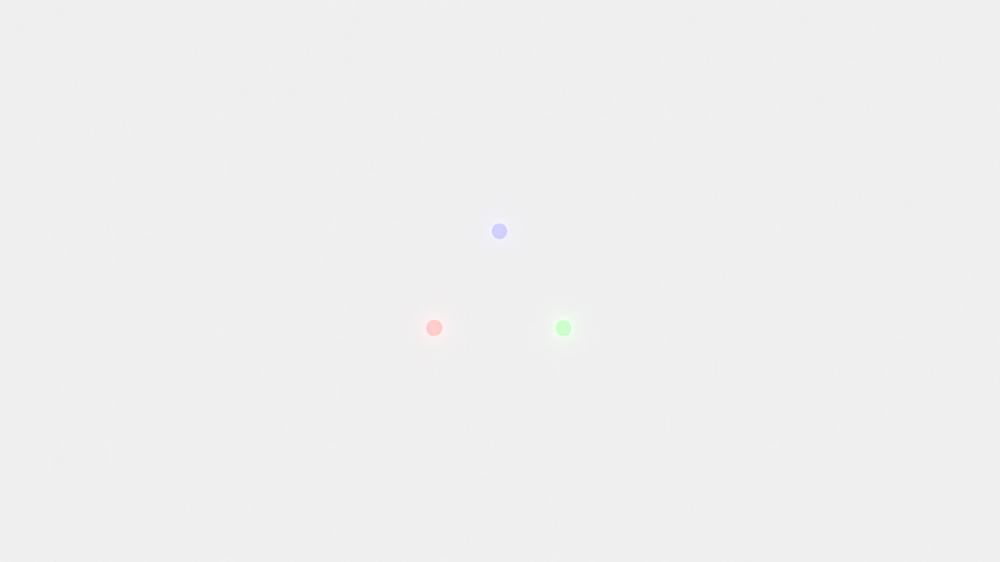With no influence, the tint of the fog is not affected by the lighting colour of the scene. The fog glows and adds light into the scene, regardless of its surroundings.
Any value between 0 and 1 is accepted. It may be desirable to allow the fog to glow slightly for artistic purposes, but generally this option is left at 1 to allow for physically accurate light influence and volumetric fog effects.
2.2. Depth
These settings control how the volumetric fog interacts with objects at different depths and distances. They do not generally impact CPU, memory or GPU usage.
2.2.1. Far Z
This is controlled by the ZFar setting. This controls the furthest distance the fog
will reach from the camera. Beyond this distance, the fog is cut off, which means far away objects
won't be able to cast light shafts or shadows.
The above image was taken with a far Z of 500. Each of the vertical stripes are 10 studs wide, and every fourth stripe is glowing. This means there's 70 studs of darkness between each stripe.
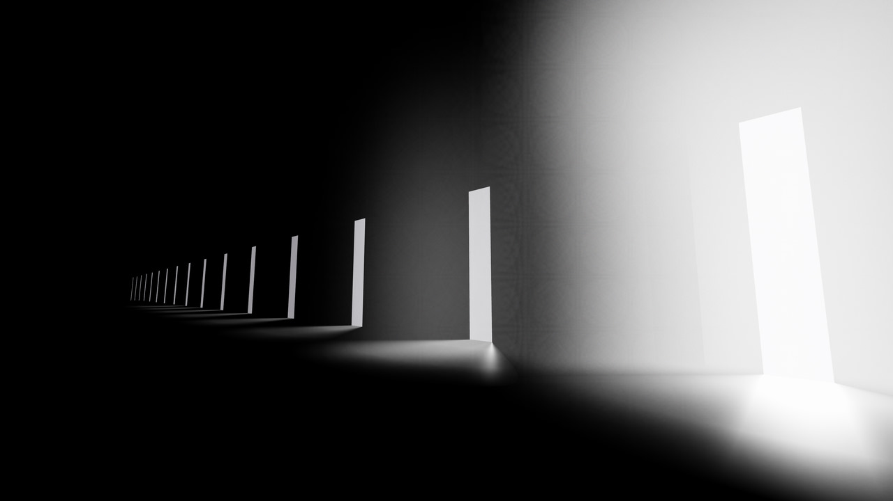The scene above has a shorter far Z of 100. Notice that, because all of the resolution of the fog is focused closer to the camera, the nearby lighting has a greater influence on the final result, and so appears brighter.
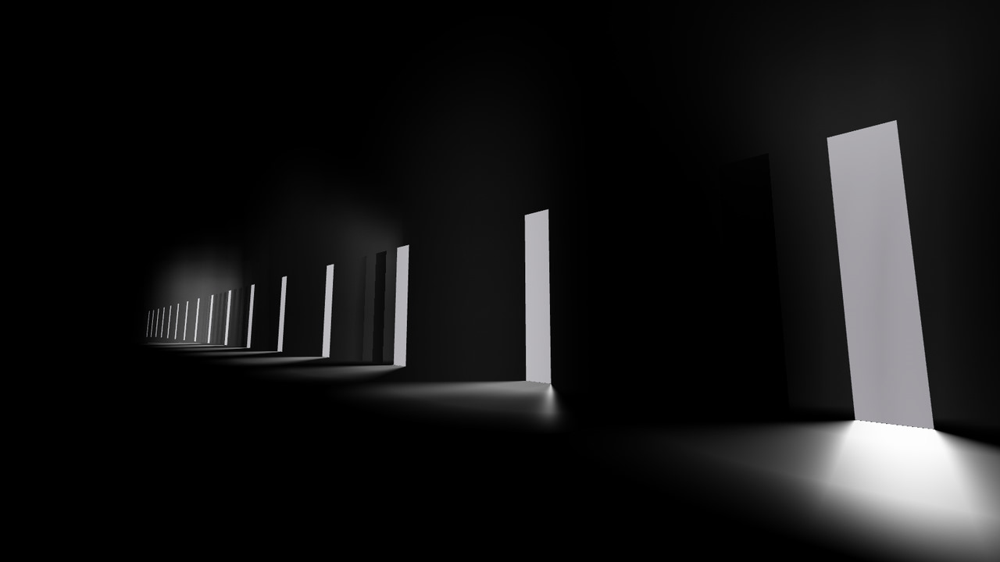Be careful when setting this to large values. By stretching out the fog over a large distance, the limited resolution of the fog will become more apparent, and you will need to increase it to capture the detail of all of the lights. See the Resolution section later on for details on how to do this, and some of the potential pitfalls of doing this.
You should also keep in mind that Roblox cuts off rendering of visual effects beyond a certain distance. If you exceed this limit, then far away portions of the fog will not render or contribute light towards the scene, meaning you will be wasting computing resources.
In general, you should prefer to keep the far Z distance as close as you can get away with for your scene. This will ensure that most resources are allocated for drawing volumetric lights that are close to the camera, and not blank or far-away areas of your scene.
2.2.2. Near Z
This is controlled by the ZNear setting. This controls the distance the fog will start
from the camera. Closer than this distance, the fog is cut off, which means nearby objects won't be
able to cast light shafts or shadows.
The scene above has a near Z of 250. Notice that, because all of the resolution of the fog is focused on a few lights further away, the far-away lighting has a greater influence on the final result, and so appears brighter.
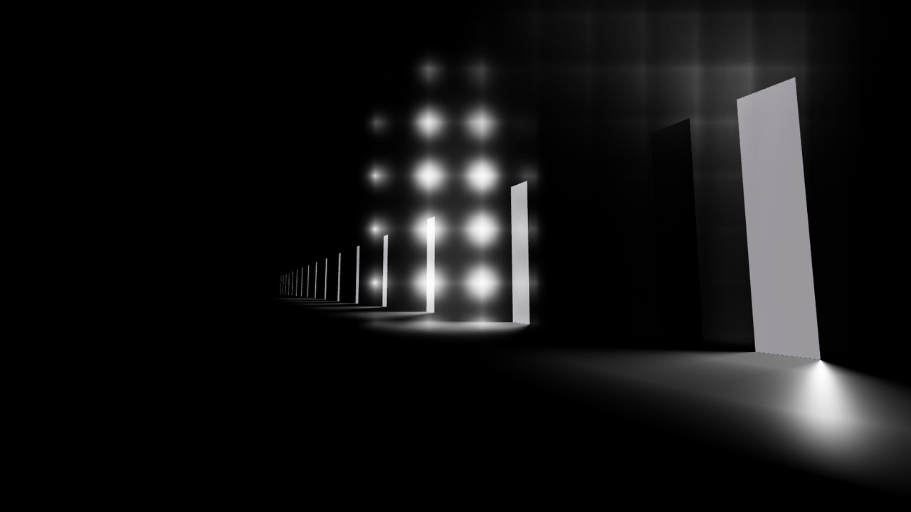Ensure that the near Z distance is closer than the far Z distance. If the two are reversed, you may get unexpected results and visual glitchiness.
Most of the time, the near Z distance should be set to 0 so that nearby fog doesn't unexpectedly disappear. However, if you are trying to light an object far away, and the nearby scene does not require volumetric fog effects, then the near Z distance can be used to focus computing resources on the far-away objects and leave nearby objects unaffected.
2.2.3. Z offset
This is controlled by the ZOffset setting. This adjusts how the fog gets occluded by
nearby geometry at different depths.
In the scene above, this is set to 0, which means depth occlusion occurs as usual. Notice that the walls in front of the light block out the fog, and the walls behind the light do not block out the fog. This is the physically accurate value, and is set to this value by default.
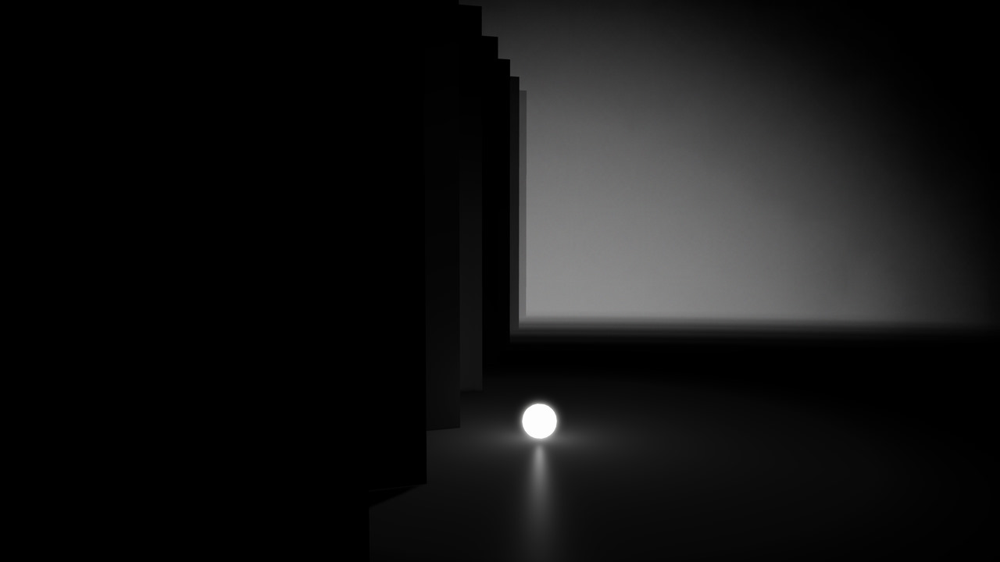In the scene above, the Z offset is set to -100. The fog now appears as if it were positioned behind the further walls. Note that this does not affect how the fog is tinted, as it is still drawing from the same light samples as usual.
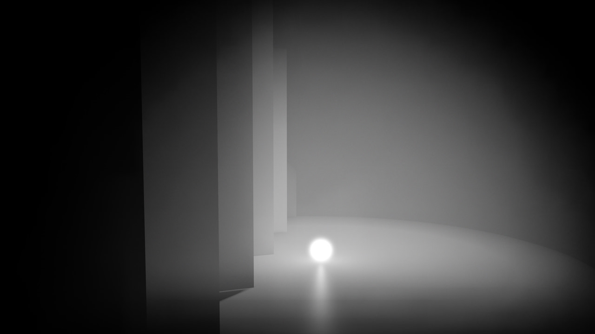In the scene above, the Z offset is set to 50. The fog now appears on top of all of the walls. Be careful when increasing the Z offset; if the Z offset places fog behind the camera, the fog behind the camera will not render, which means you will be wasting computing resources.
Unless you are integrating volumetric lighting with other visual effects and need fine grain control over the depth, this value is best kept at 0.
2.2.4. Circular fog
This is controlled by the Circular setting. When enabled, the Z distance of the fog
varies with physical distance rather than perpendicular distance.
Around the edges of the screen, the fog will naturally curve towards the camera, and the density of the fog will look symmetric as the camera rotates. This is the more physically accurate option, and is enabled by default.

When disabled, perpendicular distance is used instead. The layers of fog are 'flattened' relative to the camera, which means the density of the fog is no longer symmetric. You may notice shifting fog density around the edges of the screen, which can be especially distracting in VR. Due to this, it is not recommended to disable circular fog in scenes where the camera is moving.
2.3. Dithering
VOLUMIKA's volumetric fog is built up from multiple semi-transparent layers placed throughout the scene. As more of these layers are used, each layer is made more transparent, which means the numbers used when calculating the lighting and colour information get smaller. Computers only have a limited amount of precision when handling numbers, so at such small scales, precision and rounding errors can creep in. These stack up in the final image to produce distracting artifacts.
To mask these patterns, noise can be added to each layer to jitter the brightness of the image. This breaks up the obvious patterns created by these precision errors and replaces it with a fine grained noise, which is far easier to tune out and much more visually pleasing. This technique is known as dithering, and VOLUMIKA has many settings for tuning the dithering that it uses.
Enabling dithering may increase the amount of texture memory used, but should not influence frame times significantly.
2.3.1. Enable dithering
This is controlled by the Dithering setting. This switches VOLUMIKA from using accurate
textures to using dithered textures.
The above scene has dithering disabled. Notice how, due to the stacking of precision and rounding errors, colour bands and visual artifacts appear in the fog. This effect is magnified when using darker tint values.
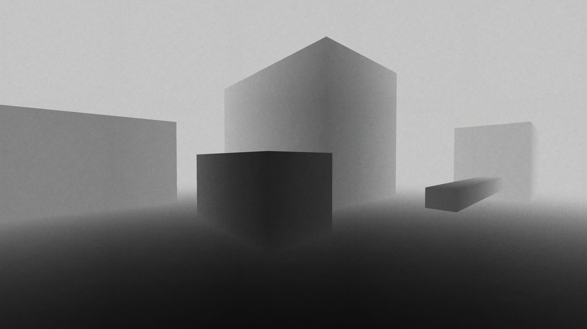By turning on dithering, these visual artifacts are broken up and masked by a layer of noise, which makes the overall image much more pleasing to view. The noise also helps to add back a limited amount of colour accuracy when the jittered layers mix together.
2.3.2. Dithering depth factor
This is controlled by the DitheringDepthFactor setting. This scales the intensity of
the noise used for dithering. This factor defaults to 2.
The above scene has an increased dithering depth factor. Notice that the noise pattern is much deeper and more noticeable. Generally, you want to reduce this factor as much as possible to minimise the visibility of this noise.
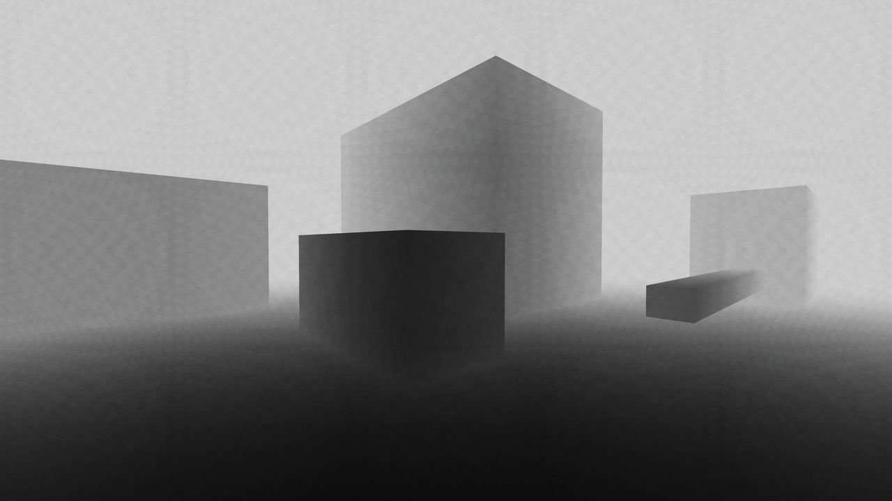However, be careful not to reduce it too much. In the above scene, the dithering depth factor has been lowered, so the noise is less visible. However, the reduced noise can no longer effectively mask the visual artifacts and colour banding perfectly, so they appear faintly.
2.3.2. Dithering size factor
This is controlled by the DitheringSizeFactor setting. This scales the size of the
textures used for dithering. This factor defaults to 2.
The above scene has a decreased dithering size factor. Because the size of the dithering texture is smaller, each individual pixel of the texture appears larger and more noticeable. This makes the noise look coarser and more upscaled.
Inversely, larger dithering textures make the noise look smaller, because there are more pixels per texture. However, if the texture is shown on screen at a resolution far smaller than the dithering texture, the noise may be downscaled, blended together, and therefore reduced in effectiveness.
Generally, this setting is best left at 2, which means the dithering texture will always be around two times larger than it's shown on screen. This means the texture can withstand some upscaling without appearing blocky. However, reducing this factor could be used for artistic effects, or to save on texture memory usage if the blockier noise is less noticeable in your scene.
2.3.3. Adaptive dithering
This is controlled by the DitheringAdaptive setting. When enabled, the dithering depth
and size factors are automatically adjusted to try and better match the lighting conditions. This
takes into account a wide range of factors, such as the tint of the fog and the resolution of the
screen, however it may still require some manual tweaking for optimal results. This is enabled by
default.
Note that this option may load new textures in as conditions change. This may slightly increase the amount of texture memory used over time and may lead to brief flashes as textures are loaded in.
2.3.4. Temporal dithering
This is controlled by the DitheringTemporal setting. When enabled, the noise pattern
used for dithering changes every frame. This attempts to leverage the eye's persistence of vision to
smooth out the noise further, and helps to prevent the eye from latching onto patterns that may
appear in the noise. This is enabled by default.
This option requires a few extra textures to be loaded, so texture memory usage may increase.
2.4. Resolution
These settings control the resolution of the volumetric fog. At higher resolutions, circular fog has a higher quality shape, light shafts are smoothed out and more well defined, lighting information is kept closer to the source which reduces light leaking, and small or thin light sources are less likely to be missed or sliced up. However, higher resolutions greatly increase GPU usage.
2.4.1. XY resolution
This is controlled by the ResolutionXY setting. XY resolution controls the number of
points sampled in the camera's horizontal and vertical directions, corresponding to the X and Y
directions on screen.
In the above scene, the resolution has been set to 25. As you can see, there is minimal light leaking, and a lot of definition in the sun shafts. This is because the distance between light samples is small, so it can capture small details and areas of high contrast well, and prevents lighting information from passing through most walls.
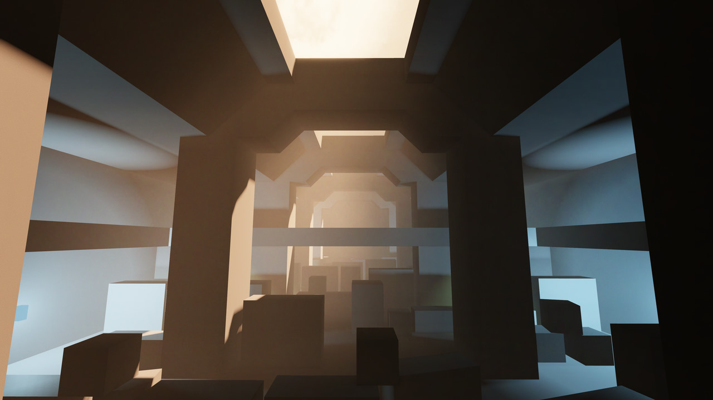The above scene has set the resolution to 4. The sun shafts are not as sharp, and generally the fog has much more spread out lighting.
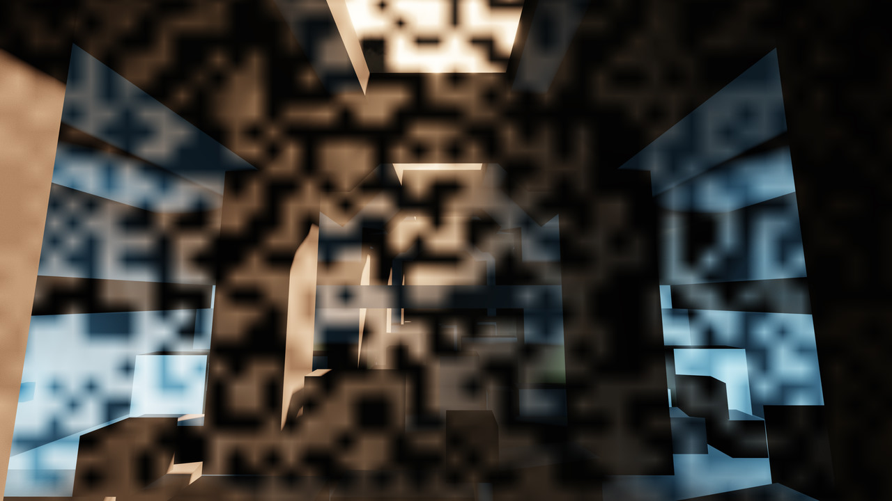Be wary of setting the resolution too high. Roblox has a limit on the resolution it is capable of rendering, and this limit may vary per device. If the resolution is too high, random areas of the fog will drop out. Remember that the number of pixels increases with the square of the resolution, so it is more expensive to go from 10 to 11, compared with going from 4 to 5.
Higher resolution fog will take away more resources from other Roblox visual effects, such as particle systems. Keep this in mind if you use a lot of visual effects.
Because most volumetric lighting looks perfectly fine at lower resolutions, it is generally preferable to use a lower resolution. Reasonable values range from 4 to 10.
2.4.2. Z resolution
This is controlled by the ResolutionZ setting. Z resolution controls how many different
depths are sampled for each point on the screen.
In the scene above, the Z resolution is set to 5. The scene is clearly divided up into multiple layers of different depths. Because light is only sampled at those depths, small light sources that sit in between the layers might be missed or appear oddly cut-up.
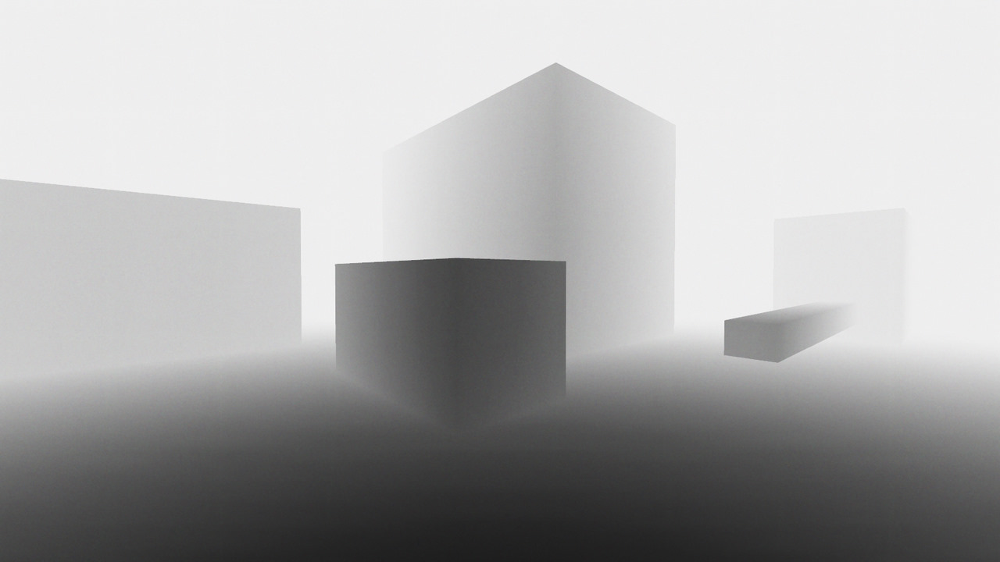The above scene has set the resolution to 20. The distinction between different depths is gone, and the overall result looks higher quality.
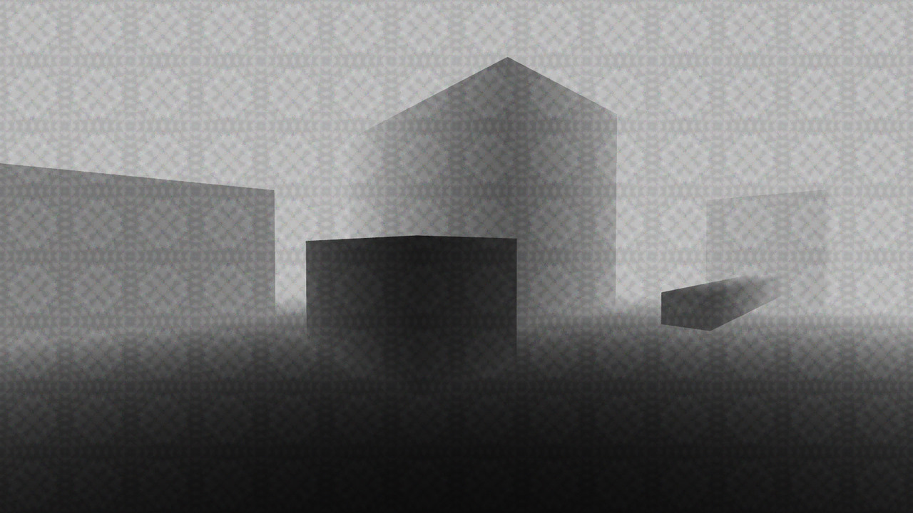As the Z resolution goes up, the individual layers of the fog need to be more transparent to prevent the scene from getting too bright. Be mindful that these extra layers will increase the amount of imprecision and rounding errors in the final result, which can lead to bands of colour and other visual artifacts as demonstrated above. The effect is exaggerated for more transparent fog. You may need to increase the amount of dithering or adjust your exposure to counteract these effects.
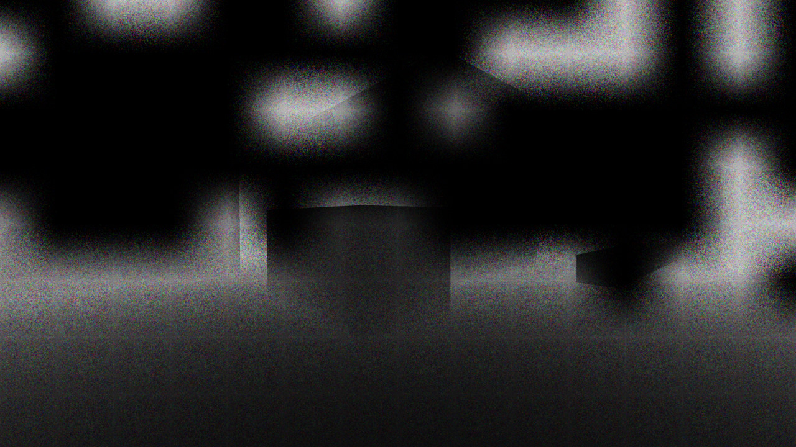Be wary of setting the resolution too high. Roblox has a limit on the resolution it is capable of rendering, and this limit may vary per device. If the resolution is too high, random areas of the fog will drop out. Unlike XY resolution, the cost of adding an extra unit of resolution is constant; going from 4 to 5 is the same cost as going from 10 to 11.
Higher resolution fog will take away more resources from other Roblox visual effects, such as particle systems. Keep this in mind if you use a lot of visual effects.
Because most volumetric lighting looks perfectly fine at lower resolutions, it is generally preferable to use a lower resolution. Reasonable values range from 8 to 20.
3. Advanced settings
These are found directly under the 'Settings' instance, inside of the 'Advanced' instance. 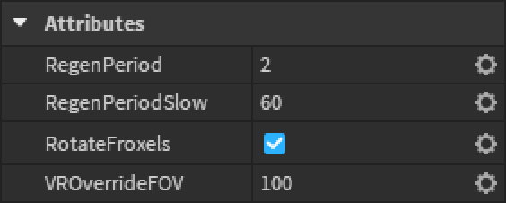 These are not intended to be edited by most people and are more technical in nature.3.1. Regeneration
These settings control how the froxel grid regenerates over time in response to various conditions.
3.1.1. Regeneration time
This is controlled by the RegenPeriod setting. This controls the time taken for the
froxel grid to fully rebuild after a destructive change occurs, such as changing the field of view
or adjusting the near Z plane.
3.1.2. Slow regeneration time
This is controlled by the RegenPeriodSlow setting. This controls the time taken for the
froxel grid to fully rebuild while no changes are being made. This naturally limits the lifetime of
individual particles in the system and ensures that fog brightness does not drift after extended
time periods.
3.2. Rotate froxels
This is controlled by the RotateFroxels setting. Enabling this randomises the rotation
of the froxel textures on a per-froxel basis. When combined with dithering, this increases the
apparent colour depth by allowing multiple different noise samples to mix and average out. However,
this may also increase radially symmetric artifacts in some edge cases.
3.3. VR field of view
This is controlled by the VROverrideFOV setting. This controls the field of view used
whenever a VR headset is active in the game. This is used because headsets have well-defined FOV
values that may not match the Roblox primary camera FOV.
This is generally best left at 100, which covers enough area to look good in a Valve Index VR headset. However, if using an ultra-wide-FOV headset, such as a Varjo or Pimax headset, this parameter may be increased to match the FOV specifications of those headsets. For most players however, supporting these ultra-wide-FOV headsets would waste computing resources.